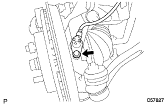

フロントアクスル ハブ LH 取り付け |
| 1. フロントアクスルASSY LH取り付け |
ロワアームASSYをフロントアクスルASSY LHに取り付け、キャッスルナットで締め付ける。
新品のクリップを取り付ける。
 |
アクスルASSYをショックアブソーバASSYに取り付け、車両前方からボルト2本を挿入し、ナット2個を締め付ける。
| 2. タイロッド エンドSUB-ASSY LH取り付け |
タイロッドエンドをステアリングナックルに取り付け、キャッスルナットで締め付ける。
新品のコッターピンを取り付ける。
| 3. スタビライザ バー FR取り付け |
クッションリテーナNo.1を2個、クッション2個およびスタビライザバーを図の向きになる様に取り付け、ナットで締め付ける。
 |
スタビライザボルトをスパナ(10mm)で固定し、新品のナットを締め付ける。
| 4. フロントディスク取り付け |
ディスクとアクスルハブに合わせマークを付け、ディスクを取りはずす。
| 5. フロントデイスクブレーキキヤリパASSY LH取り付け |
 |
ボルト2本でデイスクブレーキキヤリパASSYをステアリングナックルに取り付ける。
| 6. フロントアクスル シャフト ナット LH取り付け |
ソケツトレンチ(30ｍｍ)を使用して、新品のハブナットを取り付ける。
| 7. フロントアクスル振れおよび軸方向のガタ点検 |
参照)| 8. スピード センサ FR LH取り付け |
ボルトで、スピードセンサワイヤおよびフレキシブルホースをショックアブソーバASSYに取り付ける。
 |
クリツプをショックアブソーバASSYに取り付ける。
|  |
ボルトで、スピードセンサＦＲをステアリングナックルに取り付ける。
| 9. フロントアクスル シャフト ナット LH取り付け |
 |
タガネおよびハンマーを使用して、ハブナットをかしめる。
| 10. フロントタイヤ取り付け |
| 11. フロントホイールアライメント点検·調整 |
参照)| 12. テストモード点検(スピードセンサ系統) |
参照)